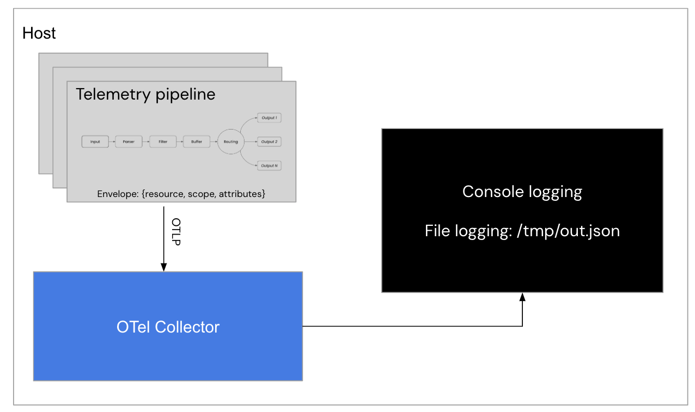
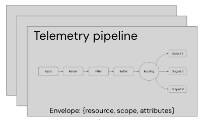
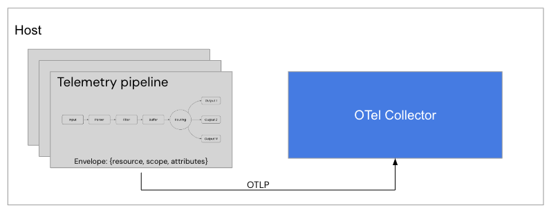

fluentbit-install-demo root directory:
$ ls -l support/configs-lab-7/
-rw-r--r--@ 1 erics staff 166 Aug 1 15:34 Buildfile-fb
-rw-r--r-- 1 erics staff 215 Jul 27 09:47 Buildfile-otel
-rw-r--r-- 1 erics staff 73 Jul 25 13:51 Buildfile-prom
-rw-r--r-- 1 erics staff 1589 Aug 1 15:50 workshop-fb.yaml
-rw-r--r-- 1 erics staff 245 Jul 30 15:42 workshop-otel.yaml
-rw-r--r-- 1 erics staff 209 Jul 27 09:23 workshop-prom.yml

INPUT phase with a
simple dummy plugin generating sample log events as follows:
# This file is our workshop Fluent Bit configuration.
#
service:
flush: 1
log_level: info
pipeline:
inputs:
# This entry generates a success message for the workshop.
- name: dummy
dummy: '{"service" : "backend", "log_entry" : "Generating a 200 success code."}'
...
workshop-fb.yaml
following the inputs section is as follows:
outputs:
# This entry directs all tags (it matches any we encounter)
# to print to our console.
- name: stdout
match: '*'
format: json_lines
# source install.
#
$ [PATH_TO]/fluent-bit --config workshop-fb.yaml
...
[2025/07/10 14:14:57] [ info] [input:dummy:dummy.0] initializing
[2025/07/10 14:14:57] [ info] [input:dummy:dummy.0] storage_strategy='memory' (memory only)
[2025/07/10 14:14:57] [ info] [input:dummy:dummy.1] initializing
[2025/07/10 14:14:57] [ info] [input:dummy:dummy.1] storage_strategy='memory' (memory only)
[2025/07/10 14:14:57] [ info] [output:stdout:stdout.0] worker #0 started
[2025/07/10 14:14:57] [ info] [sp] stream processor started
[2025/07/10 14:14:57] [ info] [engine] Shutdown Grace Period=5, Shutdown Input Grace Period=2
{"date":1722519715.919221,"service":"backend","log_entry":"Generating a 200 success code."}
{"date":1722519716.252186,"service":"backend","log_entry":"Generating a 200 success code."}
{"date":1722519716.583481,"service":"backend","log_entry":"Generating a 200 success code."}
{"date":1722519716.917044,"service":"backend","log_entry":"Generating a 200 success code."}
{"date":1722519717.250669,"service":"backend","log_entry":"Generating a 200 success code."}
{"date":1722519717.584412,"service":"backend","log_entry":"Generating a 200 success code."}
...
Buildfile-fb. This is going to be used to build a new container image
and insert our configuration. Note this file needs to be in the same directory as our
configuration file, otherwise adjust the file path names:
FROM ghcr.io/fluent/fluent-bit:5.1.1
COPY ./workshop-fb.yaml /fluent-bit/etc/workshop-fb.yaml
CMD [ "fluent-bit", "-c", "/fluent-bit/etc/workshop-fb.yaml"]
Buildfile-fb and assuming you are in the same directory:
$ podman build -t workshop-fb:v12 -f Buildfile-fb
STEP 1/3: FROM ghcr.io/fluent/fluent-bit:5.1.1
STEP 2/3: COPY ./workshop-fb.yaml /fluent-bit/etc/workshop-fb.yaml
--> b4ed3356a842
STEP 3/3: CMD [ "fluent-bit", "-c", "/fluent-bit/etc/workshop-fb.yaml"]
COMMIT workshop-fb:v4
--> bcd69f8a85a0
Successfully tagged localhost/workshop-fb:v12
bcd69f8a85a024ac39604013bdf847131ddb06b1827aae91812b57479009e79a
$ podman run --rm --name fbv12 workshop-fb:v12
...
[2025/07/10 14:14:57] [ info] [input:dummy:dummy.0] initializing
[2025/07/10 14:14:57] [ info] [input:dummy:dummy.0] storage_strategy='memory' (memory only)
[2025/07/10 14:14:57] [ info] [input:dummy:dummy.1] initializing
[2025/07/10 14:14:57] [ info] [input:dummy:dummy.1] storage_strategy='memory' (memory only)
[2025/07/10 14:14:57] [ info] [output:stdout:stdout.0] worker #0 started
[2025/07/10 14:14:57] [ info] [sp] stream processor started
[2025/07/10 14:14:57] [ info] [engine] Shutdown Grace Period=5, Shutdown Input Grace Period=2
{"date":1722519715.919221,"service":"backend","log_entry":"Generating a 200 success code."}
{"date":1722519716.252186,"service":"backend","log_entry":"Generating a 200 success code."}
{"date":1722519716.583481,"service":"backend","log_entry":"Generating a 200 success code."}
{"date":1722519716.917044,"service":"backend","log_entry":"Generating a 200 success code."}
{"date":1722519717.250669,"service":"backend","log_entry":"Generating a 200 success code."}
{"date":1722519717.584412,"service":"backend","log_entry":"Generating a 200 success code."}
...
workshop-fb-helm.yaml. Rather than
a source or container run, we update that same file with this lab's pipeline and roll it out with a
helm upgrade. Replace the extraFiles block, starting with the
service and inputs sections, keeping the http_server lines so the liveness probe
on port 2020 keeps passing:
args:
- --workdir=/fluent-bit/etc
- --config=/fluent-bit/etc/conf/fluent-bit.yaml
config:
extraFiles:
fluent-bit.yaml: |
service:
flush: 1
log_level: info
http_server: on
http_listen: 0.0.0.0
http_port: 2020
pipeline:
inputs:
# This entry generates a success message for the workshop.
- name: dummy
dummy: '{"service" : "backend", "log_entry" : "Generating a 200 success code."}'
pipeline:
inputs:
...
outputs:
# This entry directs all tags to the console (pod stdout).
- name: stdout
match: '*'
format: json_lines
helm upgrade from the
fluentbit-install-demo root directory. This rolls out a new Fluent Bit pod
picking up our initial pipeline, so we can check the configuration works before building
towards OTel:
$ helm --kube-context rancher-desktop upgrade --install fluent-bit fluent/fluent-bit \
--set image.tag=5.1.1 \
--namespace logging --create-namespace \
--values workshop-fb-helm.yaml
Release "fluent-bit" has been upgraded. Happy Helming!
NAME: fluent-bit
NAMESPACE: logging
STATUS: deployed
REVISION: 9
stdout, the events are written to the Fluent Bit
pod's console. View them by following the pod logs in the logging namespace
(exit with CTRL-C):
$ kubectl --context rancher-desktop -n logging logs -l app.kubernetes.io/name=fluent-bit -f
...
{"date":1722519715.919221,"service":"backend","log_entry":"Generating a 200 success code."}
{"date":1722519716.252186,"service":"backend","log_entry":"Generating a 200 success code."}
{"date":1722519716.583481,"service":"backend","log_entry":"Generating a 200 success code."}
{"date":1722519716.917044,"service":"backend","log_entry":"Generating a 200 success code."}
...
resource,
scope, attributes). Let's try adding this to our
workshop-fb.yaml file and explore the changes to our log events...
processor section needs an entry for logs. Fluent
Bit provides a simple processor called opentelemetry_envelope and is added
as follows after the inputs section:
...
pipeline:
inputs:
# This entry generates an success message for the workshop.
- name: dummy
dummy: '{"service" : "backend", "log_entry" : "Generating a 200 success code."}'
processors:
logs:
- name: opentelemetry_envelope
...
# source install.
#
$ [PATH_TO]/fluent-bit --config workshop-fb.yaml
resource, scope,
and attributes. This runs until exiting with CTRL_C:
...
[2025/07/10 15:28:55] [ info] [input:dummy:dummy.0] initializing
[2025/07/10 15:28:55] [ info] [input:dummy:dummy.0] storage_strategy='memory' (memory only)
[2025/07/10 15:28:55] [ info] [input:storage_backlog:storage_backlog.1] initializing
[2025/07/10 15:28:55] [ info] [input:storage_backlog:storage_backlog.1] storage_strategy='memory' (memory only)
[2025/07/10 15:28:55] [ info] [input:storage_backlog:storage_backlog.1] queue memory limit: 95.4M
[2025/07/10 15:28:55] [ info] [output:stdout:stdout.0] worker #0 started
[2025/07/10 15:28:55] [ info] [sp] stream processor started
[2025/07/10 15:28:55] [ info] [engine] Shutdown Grace Period=5, Shutdown Input Grace Period=2
{"date":1752154136.222278,"__internal__":{"group_attributes":{"resource":{},"scope":{}},"log_metadata":{}},"service":"backend","log_entry":"Generating a 200 success code."}
{"date":1752154137.223238,"__internal__":{"group_attributes":{"resource":{},"scope":{}},"log_metadata":{}},"service":"backend","log_entry":"Generating a 200 success code."}
{"date":1752154138.223008,"__internal__":{"group_attributes":{"resource":{},"scope":{}},"log_metadata":{}},"service":"backend","log_entry":"Generating a 200 success code."}
{"date":1752154139.219798,"__internal__":{"group_attributes":{"resource":{},"scope":{}},"log_metadata":{}},"service":"backend","log_entry":"Generating a 200 success code."}
{"date":1752154140.222503,"__internal__":{"group_attributes":{"resource":{},"scope":{}},"log_metadata":{}},"service":"backend","log_entry":"Generating a 200 success code."}
...
Buildfile-fb and assuming you are in the same directory:
$ podman build -t workshop-fb:v13 -f Buildfile-fb
STEP 1/3: FROM ghcr.io/fluent/fluent-bit:5.1.1
STEP 2/3: COPY ./workshop-fb.yaml /fluent-bit/etc/workshop-fb.yaml
--> b4ed3356a842
STEP 3/3: CMD [ "fluent-bit", "-c", "/fluent-bit/etc/workshop-fb.yaml"]
COMMIT workshop-fb:v4
--> bcd69f8a85a0
Successfully tagged localhost/workshop-fb:v13
bcd69f8a85a024ac39604013bdf847131ddb06b1827aae91812b57479009e79a
$ podman run --rm --name fbv13 workshop-fb:v13
resource, scope,
and attributes. This runs until exiting with CTRL_C:
...
[2025/07/10 13:31:09] [ info] [input:dummy:dummy.0] initializing
[2025/07/10 13:31:09] [ info] [input:dummy:dummy.0] storage_strategy='memory' (memory only)
[2025/07/10 13:31:09] [ info] [input:storage_backlog:storage_backlog.1] initializing
[2025/07/10 13:31:09] [ info] [input:storage_backlog:storage_backlog.1] storage_strategy='memory' (memory only)
[2025/07/10 13:31:09] [ info] [input:storage_backlog:storage_backlog.1] queue memory limit: 95.4M
[2025/07/10 13:31:09] [ info] [sp] stream processor started
[2025/07/10 13:31:09] [ info] [engine] Shutdown Grace Period=5, Shutdown Input Grace Period=2
[2025/07/10 13:31:09] [ info] [output:stdout:stdout.0] worker #0 started
{"date":1752154270.233076,"__internal__":{"group_attributes":{"resource":{},"scope":{}},"log_metadata":{}},"service":"backend","log_entry":"Generating a 200 success code."}
{"date":1752154271.237937,"__internal__":{"group_attributes":{"resource":{},"scope":{}},"log_metadata":{}},"service":"backend","log_entry":"Generating a 200 success code."}
{"date":1752154272.234584,"__internal__":{"group_attributes":{"resource":{},"scope":{}},"log_metadata":{}},"service":"backend","log_entry":"Generating a 200 success code."}
{"date":1752154273.236762,"__internal__":{"group_attributes":{"resource":{},"scope":{}},"log_metadata":{}},"service":"backend","log_entry":"Generating a 200 success code."}
{"date":1752154274.23592,"__internal__":{"group_attributes":{"resource":{},"scope":{}},"log_metadata":{}},"service":"backend","log_entry":"Generating a 200 success code."}
...
workshop-fb-helm.yaml and add a processors section to the
dummy input. Note the indentation: everything sits inside the fluent-bit.yaml
block under extraFiles:
pipeline:
inputs:
# This entry generates a success message for the workshop.
- name: dummy
dummy: '{"service" : "backend", "log_entry" : "Generating a 200 success code."}'
processors:
logs:
- name: opentelemetry_envelope
outputs:
...
helm upgrade from the
fluentbit-install-demo root directory, rolling out a new Fluent Bit pod that
picks up our OTel Envelope processing:
$ helm --kube-context rancher-desktop upgrade --install fluent-bit fluent/fluent-bit \
--set image.tag=5.1.1 \
--namespace logging --create-namespace \
--values workshop-fb-helm.yaml
Release "fluent-bit" has been upgraded. Happy Helming!
NAME: fluent-bit
NAMESPACE: logging
STATUS: deployed
REVISION: 10
logging namespace. Note each log event has now been
put into the OTel Envelope format, providing for a resource,
scope, and attributes (exit with CTRL-C):
$ kubectl --context rancher-desktop -n logging logs -l app.kubernetes.io/name=fluent-bit -f
...
{"date":1752154270.233076,"__internal__":{"group_attributes":{"resource":{},"scope":{}},"log_metadata":{}},"service":"backend","log_entry":"Generating a 200 success code."}
{"date":1752154271.237937,"__internal__":{"group_attributes":{"resource":{},"scope":{}},"log_metadata":{}},"service":"backend","log_entry":"Generating a 200 success code."}
{"date":1752154272.234584,"__internal__":{"group_attributes":{"resource":{},"scope":{}},"log_metadata":{}},"service":"backend","log_entry":"Generating a 200 success code."}
...

